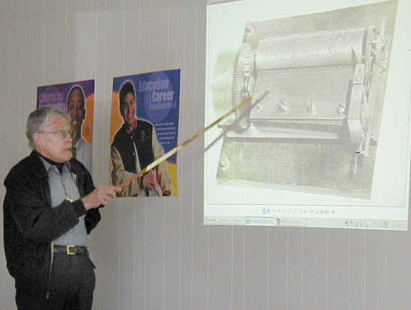
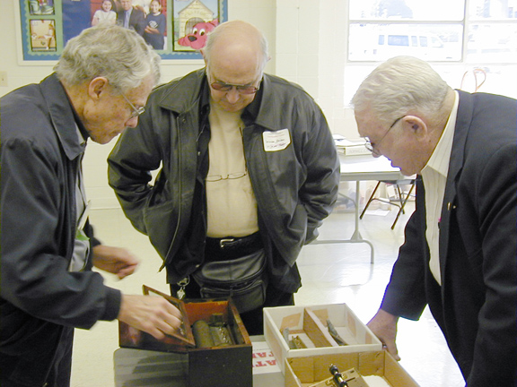
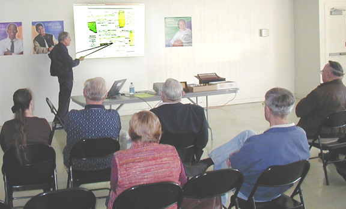

Repairing Music Boxes
This is an archived report. Meeting places, times and people have changed since it was written. See Meetings for current details.

Approximately 175 members and guest were present at our Sunday, November 14, 2004 meeting and mart. Our 50 mart tables were almost full of sellers, but our 9 silent auction tables were full. With Christmas that close , the occupancy of the mart tables was disappointing, although sales were good.

President Frank Keillor conducted a short business meeting , including election of Directors and minor changes to the Chapter’s By-Laws. Elected Directors were; Larry Muzinich, Robert Moore, John Stohr, Don Day, Scott Seamans, and Richard Davis. 2005 Officers will be elected by the Directors. Treasurer Don Day reported the Chapter is very solvent.

Our program for the day was ” Basic Music Box Repair” presented by Member Don Day. Don remarked that local repair seem to be a dying profession and those still around were fully booked, however repairs were still available on the East Coast. Don presented slides on both cylinder and disk players, and highlighted basic repairs on each type. As most present at the presentation were clock and watch types, we all enjoyed something that was new to us.